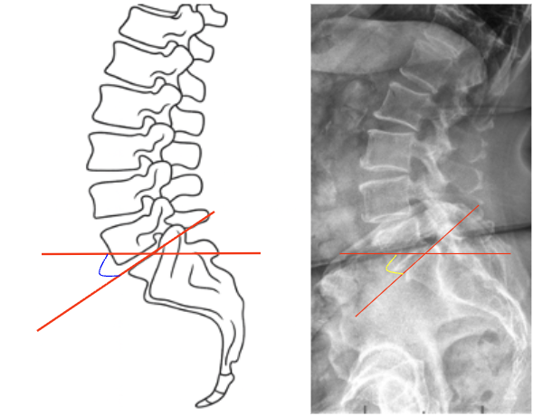

1) Description of Measurement
The Lumbosacral Angle (Ferguson’s Angle)—also known as the Sacral Inclination—is a sagittal alignment parameter that quantifies the inclination of the sacrum relative to the horizontal plane.
It reflects the orientation of the lumbosacral junction and provides insight into lumbar lordosis, pelvic orientation, and overall sagittal balance.
A higher lumbosacral angle corresponds to a more anteriorly tilted sacrum and increased lumbar lordosis, whereas a smaller angle indicates posterior pelvic tilt and decreased lordosis. This measurement is useful in evaluating posture, low back pain, spondylolisthesis, and sagittal deformity.
2) Instructions to Measure
Optional:
3) Normal vs. Pathologic Ranges
Key Point:
Normal variation depends on pelvic incidence and overall sagittal alignment; the lumbosacral angle should always be interpreted in conjunction with lumbar lordosis and pelvic parameters.
4) Important References
Ferguson AB. The static positions of the femur in relation to the pelvis and to the axis of the body. J Bone Joint Surg. 1931;13:573–595.
Voutsinas SA, MacEwen GD. Sagittal profiles of the spine. Clin Orthop Relat Res. 1986;(210):235–242.
Le Huec JC, Aunoble S, Philippe L, Nicolas P. Pelvic parameters: origin and significance. Eur Spine J. 2011;20(Suppl 5):564–571.
Roussouly P, Gollogly S, Berthonnaud E, Dimnet J. Classification of the normal variation in the sagittal alignment of the human lumbar spine and pelvis. Spine. 2005;30(3):346–353.
Barrey C, Roussouly P, Perrin G, Le Huec JC. Sagittal balance disorders in severe degenerative spine: can we identify the compensatory mechanisms? Eur Spine J. 2011;20(Suppl 5):626–633.
5) Other info....
The Lumbosacral Angle serves as a key indicator of pelvic orientation and lumbar curvature, strongly influencing overall sagittal balance.
It correlates with lumbar lordosis, sacral slope, and pelvic incidence, forming part of the spinopelvic parameter triad used in deformity analysis.
Reduced angle = posterior pelvic tilt and loss of lordosis → may lead to flat-back posture and positive sagittal imbalance.
Increased angle = anterior pelvic tilt → may cause excessive lordosis and facet joint overload.
Monitoring lumbosacral angle is valuable in spondylolisthesis, degenerative disc disease, and post-fusion alignment assessment.
EOS or long-cassette low-dose lateral imaging is preferred for full-body sagittal profile analysis.
Always interpret alongside lumbar lordosis (L1–S1), pelvic incidence, and sagittal vertical axis (SVA) for a complete global alignment evaluation.